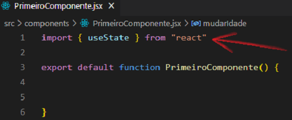
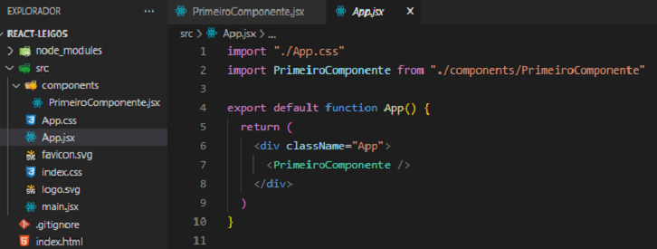
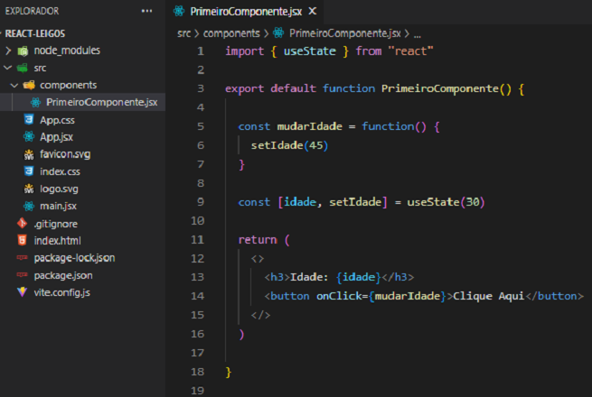
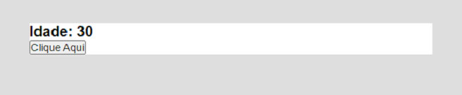
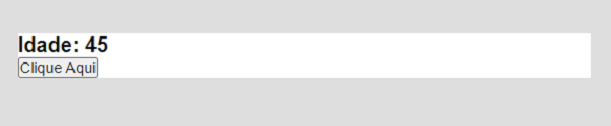

O useState é um Hook do React.
Mas o que são Hooks ?
Hooks são funções que permitem a você “ligar-se” a outros recursos a partir de componentes funcionais. O React fornece alguns Hooks internos como useState. Você também pode criar os seus próprios Hooks.
E o que o useState faz ?
Ele gera uma variável que pode sofrer alteração, simples assim.
Exemplo da sua sintaxe:
const [nome, setNome] = useState(estadoinicial)
O estadoinicial é o valor que a variável nome inicia. O setNome é a função que altera o valor da variável nome.
Outros exemplos:
const [idade, setIdade] = useState(18)
const [nome, setNome] = useState("Joca")
IMPORTANTE: Para usarmos o useState devemos importá-lo no componente.

Vamos para o exemplo prático !
O arquivo App.jsx se encontra dessa maneira:

Primeiramente temos a importação do useState. Logo em seguida temos a função mudarIdade que irá alterar (através do setIdade) o valor da variável idade para 45.
Lembre-se, no useState temos duas partes dentro dos colchetes. A primeira parte é a variável em si e a segunda parte é a função responsável por alterar o valor da variável.
No useState podemos ver que a variável idade é iniciada com o valor 30.
Na tag button (dentro do return) temos o evento de click onClick que executa a função mudarIdade.

No navegador teremos a seguinte tela:

Caso o botão seja clicado, a função mudarIdade será executada e o valor da variável idade será alterado para 45.

Para uma maior compreensão do useState deixaremos aqui um vídeo explicativo:
https://www.youtube.com/watch?v=_ggyWGZODIM&ab_channel=ProgramadorEspartano